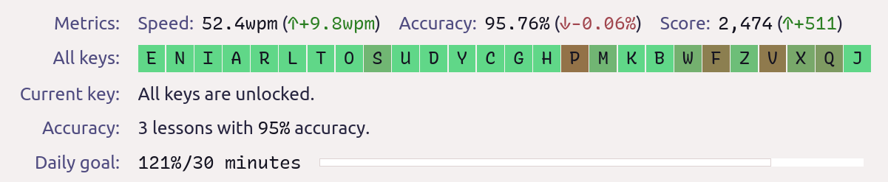
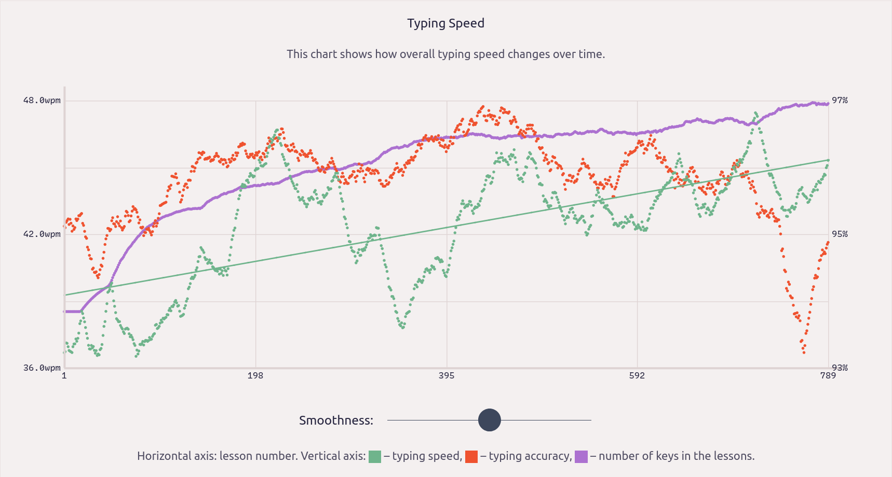
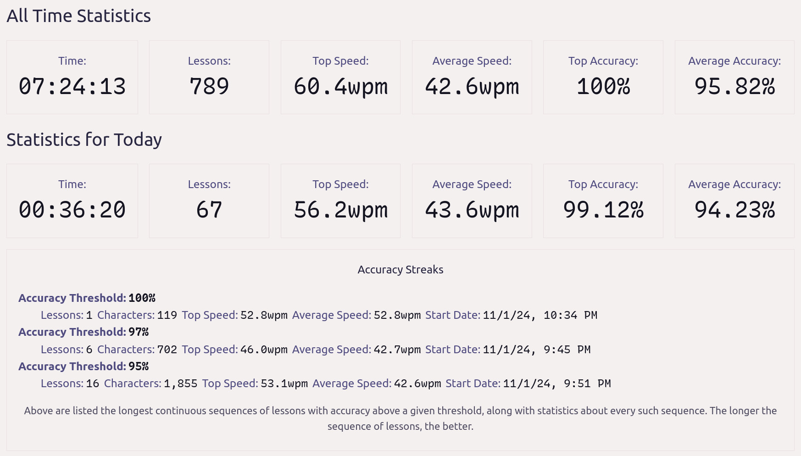

Intrigued by the Hands Down Promethium keyboard layout, which
enhances the Engram layout with a HJKL cluster for Vim as well as advanced layout
design and optimization heuristics pioneered by Alan Reiser’s Hands Down family
of layouts, I sought to improve upon its placement of punctuation, in
the spirit of the Engrammer layout, by moving apostrophe to a different finger
entirely from YOU and I so it can be typed without same-finger bigrams such as
you'd, I'd, they'd.
f p d l x ; u o y b z
s n t h k , a e i c q
\ v w g m j / . = - '
r
This change reduced same-finger bigrams from 0.58% to 0.55% in Cyanophage’s
analyzer, motivating me to continue customizing the layout and nuances further.
Notably, I mirrored the layout horizontally because I’d like to keep all vowels
on the left hand (just like Dvorak and Engram/mer), but I was unable to move the R
thumb key to the right hand in Cyanophage’s analyzer playground. Curiously, this
resulted in a lower Total Word Effort
than the canonical version — but why?
b y o u ; x l d p f
q c i e a , k h t n s z
' - = . / j m g w v
r
Training
Next, I began practicing this layout with a fresh training profile on KeyBr.
After nearly 7.5 hours of training, I finally unlocked all the alphabets at an
average speed of 42.6 WPM and an accuracy of 95.82%, using my Glove80
keyboard.



During the rigorous training, I wrote the following observations in my notebook:
The most apparent and enduring change is the swap of N and S on the right
hand’s home row. I had experienced the same thing before when switching to
Engram (HTSN) from BEAKL-15 (STNB) and Dvorak (HTNS), which both have -TN-.
N feels good to tap with the ring finger, which is stronger than the pinky.
NG, ND, SP scissors are shortened (clustered closer together) and powerful!
The layout is compact, with plenty of rolling and flowing around the center
of the right hand. I’m not impeded in my typing at all; it feels efficient.
W is taking a long time to clear, but its training helps strengthen N vs S.
Cleared W at 3 hours and 18 minutes after completing 356 lessons with speed 43.1 (average) to 59.2 (top) WPM, and accuracy 96.23%.
WN is a same-finger bigram — the only one I really noticed — but the
ring finger is dexterous enough to tap them quickly in succession as it ascends.
FF on pinky finger’s upper row feels weak… maybe I just need more practice?
I might consider using a BFh variant to bring B and F down to the home row.
Q took a long time too and it strained my hand to practice so many one-handed
QU drills in a short time but, in reality, Q ought to be infrequent.
Cleared Q at 6 hours and 45 minutes after completing 720 lessons with speed 42.5 (average) to 60.4 (top) WPM, and accuracy 95.96%.
Evaluation
I spent a day with the layout in the real world to evaluate its effectiveness in
the terminal and Vim (especially on my Linux laptop keyboard), and noticed that:
WN is a stair-step ascension same-finger bigram that I wished I could rake down instead
DW (2u skip) is not as convenient for Vim as it was in Engram (which puts them adjacent)
FG (2u skip) is not as convenient for shell background jobs (bg, fg) as it was in Engram
SW (half scissor) feels a little bit weaker curling inward than reaching up (as in Engram)
FF (e.g. “stuff”) is a little bit of a chore for the pinky finger to tap twice in the upper row
Refinement
PF and WV
I really didn’t want to deviate from the canonical Hands Down Promethium layout
(this “Enthium” derivative was just supposed to be a simple horizontal mirror,
plus some rearranged punctuation marks) so I reluctantly went to the keyboard
layout analyzer playgrounds to see how bad it would be to swap PF with WV…
and to my complete surprise, this change hardly affected the layout’s performance:
b y o u ; x l d w v
q c i e a , k h t n s z
' - = . / j m g p f
r
Oxey’s analyzer showed no changes at all in the stats!
KeySolve analyzer showed an increase in FSB from 0.14% to 0.37% but the other
stats improved: FSS reduced from 0.82% to 0.48%, HSB reduced from 6.05% to
5.64%, and HSS reduced from 5.97% to 5.50%; everything else was identical.
Cyanophage analyzer’s Total Word Effort increased from 730.9 to 735.9 but all
other stats remained the same!
I’m so glad this experiment worked out because it makes the layout a lot more
comfortable for me in practice and it would also further reduce the barrier to
entry for others seeking to switch over to Enthium from the Engrammer layout. :)
Q and Z
After the first month of real-world use, I also swapped Q with Z to be like Engram (with Q typed by the right pinky finger) in order to avoid
one-handed QU sequences (in favor of hand alternation) which overwork the left
pinky finger during KeyBr training (see the last observation above) and in real usage.
b y o u ; x l d w v
z c i e a , k h t n s q
' - = . / j m g p f
r
This deviation incurred a modest increase in Oxey’s analyzer’s Total Redirects
from 0.350% to 3.389%, along with a decrease in Onehands from 2.206% to 2.091%,
and a significant increase in the Total Rolls score from 43.816% up to 44.055%.
Similarly, Cyanophage’s Total Word Effort score decreased from 735.9 to 735.1,
along with a negligible increase in the Effort score from 398.34 up to 398.38,
and with similarly modest differences in the Trigram Stats score distribution.
In contrast, there was no change at all in the KeySolve analyzer’s statistics!
B and V
After the second month of real-world use, I reverted the previous Q and Z swap and
then rotated B and V out from the upper row to the home row lateral in order to
avoid reaching up with short pinky fingers or those weakened by convention.
q y o u ; x l d w z
b c i e a , k h t n s v
' - = . / j m g p f
r
In the Cyanophage analyzer, this change reduces Pinky/Ring Scissors from 0.49%
down to 0.35% (huge drop!) and Skip Bigrams (2u) from 0.30% down to 0.29%.
The other analyzers don’t fully comprehend the placement of lateral pinky keys,
as explained in the note at the top of each analyzer’s respective subheading,
but Oxey’s analyzer reports a notable reduction in SFBs from 0.829% to 0.818%.
O and U
O and U are swapped (changing the inward-rolling YOU into a redirecting YUO) to
distribute finger workload more evenly (especially for the middle finger) and
to avoid same-finger bigrams on AU (as in “author”) and EO (as in “people”).
q y u o / x l d w z
b c i e a , k h t n s v
' - = . ; j m g p f
r
This change was suggested by the creator of Cyanophage’s Analyzer himself 🤩 since it
reduced SFBs from 0.55% to 0.49% and LSBs from 0.23% to 0.20% in his analyzer.
Similarly, it reduces SFBs to 0.795% in Oxey’s analyzer, elevating this layout
to 🥇 first place in Pascal Getreuer’s performance rankings for SFBs and LSBs!
@jcbql suggestions
After releasing Enthium v9, I received some powerful performance improvement
suggestions from @jcbql in GitHub issue 6, which sparked a chain of further
evaluation of 16 different candidates in search of the next Enthium v10 layout:
The differences between Engram/mer and Enthium are so minimal that one
might switch to it completely with about 6 hours1 of practice, spread over 2-3
days (start Friday and use weekend), to unlock all letters in KeyBr training. Enjoy!
I’m giving a shorter estimate than my own elapsed time since I trained with
Promethium before swapping PF with WV; see my observation on clearing W. ↩
Updates
Comments
NOTE: Comments are temporarily disabled on this page while I migrate them from Disqus to Gisqus (GitHub Discussions) because the former has 💪 forced the display of advertisements 🤑 on this website recently.


Comments